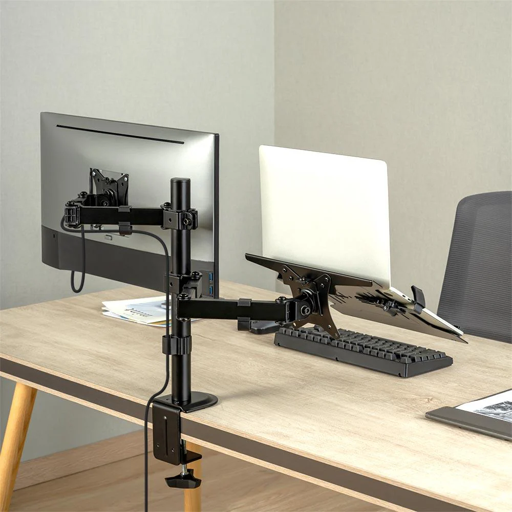

Soporte ajustable para monitor

Soporte ajustable para monitor. Ideal para ajustar la altura y ángulo de tu pantalla. Optimiza tu espacio de trabajo y mejora tu postura con el soporte ajustable para monitor. Diseñado para proporcionar comodidad y funcionalidad, este soporte permite ajustar la altura, inclinación y rotación de tu monitor para que puedas encontrar el ángulo perfecto para tu visualización.
Soporte para laptop con ventilación
Soporte para laptop con ventilación incorporada para mantener tu dispositivo fresco.
Maximiza tu comodidad y protege tu laptop con el soporte para laptop con ventilación. Este soporte está diseñado no solo para elevar tu laptop a una altura ergonómica ideal, sino también para mejorar el flujo de aire y evitar el sobrecalentamiento, asegurando un rendimiento óptimo.
Características destacadas:
- Ventilación Optimizada: Equipado con una superficie de rejilla que permite una excelente circulación de aire, ayudando a mantener tu laptop fresca durante largas sesiones de uso.
- Ajuste Ergonómico: Eleva tu laptop a una altura cómoda para la visualización y la escritura, reduciendo la tensión en tu cuello y espalda.
- Construcción Resistente: Fabricado con materiales duraderos y robustos, este soporte asegura la estabilidad de tu laptop y una larga vida útil.
- Diseño Compacto y Ligero: Su diseño elegante y liviano facilita el transporte y se adapta a cualquier espacio de trabajo.
- Fácil Instalación: No requiere herramientas para el montaje, y su diseño intuitivo permite una configuración rápida y sin complicaciones.
Soporte multiusos para computadora
Soporte multiusos, adecuado para computadoras, monitores y otros dispositivos.
El soporte multiusos para computadora es la solución perfecta para quienes buscan versatilidad y funcionalidad en su espacio de trabajo. Diseñado para adaptarse a una variedad de dispositivos y necesidades, este soporte ofrece un diseño robusto y ajustable que optimiza tu área de trabajo y proporciona comodidad durante el uso.
Características destacadas:
- Versatilidad Multiusos: Compatible con computadoras de escritorio, laptops, monitores y otros dispositivos, proporcionando una base estable y segura para tus equipos.
- Ajuste Personalizable: Permite ajustar la altura y el ángulo para una visualización óptima, adaptándose a diferentes posturas y preferencias de trabajo.
- Diseño Ergonómico: Diseñado para reducir la tensión en el cuello y la espalda, mejorando tu postura durante largas sesiones de trabajo.
- Almacenamiento Adicional: Incluye compartimentos y estantes adicionales para mantener tus accesorios, como teclados, ratones y documentos, organizados y al alcance de la mano.
- Construcción Resistente: Fabricado con materiales de alta calidad que garantizan durabilidad y estabilidad, soportando el peso de tus dispositivos sin comprometer la seguridad.
- Fácil Montaje: Incluye instrucciones claras y todo el hardware necesario para una instalación rápida y sin complicaciones.
Ideal para oficinas en casa, espacios de trabajo compartidos y cualquier entorno donde la funcionalidad y la organización sean clave. Con el soporte multiusos para computadora, disfrutarás de una estación de trabajo más eficiente y cómoda.